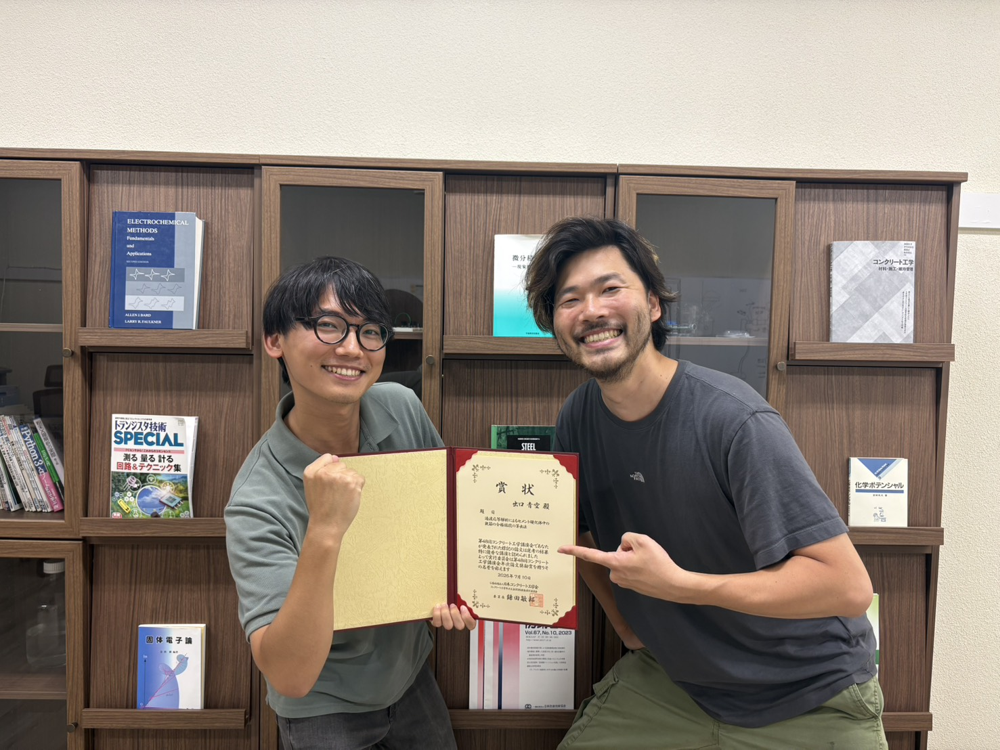

2026/09/08
出口青空が、年次論文奨励賞を受賞しました。

このたび、出口 青空（博士課程2年）が、2026年7月10日にコンクリート工学講演会で年次論文奨励賞を受賞しました。
研究テーマである「過渡応答解析によるセメント硬化体中の鉄筋の分極抵抗の算出法」が高く評価されたものです。
今後も研究室一同、より一層の研究活動の推進に努めてまいります。
ニュース一覧に戻る2026/09/08

このたび、出口 青空（博士課程2年）が、2026年7月10日にコンクリート工学講演会で年次論文奨励賞を受賞しました。
研究テーマである「過渡応答解析によるセメント硬化体中の鉄筋の分極抵抗の算出法」が高く評価されたものです。
今後も研究室一同、より一層の研究活動の推進に努めてまいります。
ニュース一覧に戻る